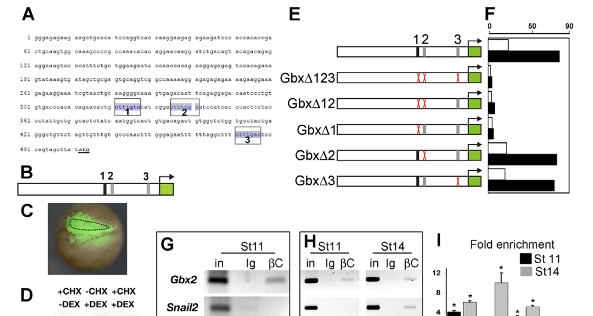

Gbx2 (Xgbx-2; Xenbase gbx2.2.L) is a non-clustered homeodomain transcription factor of the GBX family that acts in the nucleus on RNA polymerase II target genes. In early ectoderm it acts mainly as a transcriptional repressor, and it can activate otic specifier genes in a context-dependent way. It is first expressed at mid-gastrula in posterior dorsolateral ectoderm, and later in rhombomere 1 up to the midbrain-hindbrain boundary, in the posterior pre-placodal region and in the prospective neural crest. Canonical Wnt/beta-catenin signalling activates gbx2 directly through a TCF/LEF-dependent neural crest enhancer, which makes Gbx2 the earliest known transcription factor of the neural plate border. There it gives the neural folds a posterior identity, acts upstream of pax3 and msx1, and cooperates with Zic1 to allow neural crest induction while repressing anterior pre-placodal genes such as six1. Through mutual transcriptional repression with Otx2, Gbx2 positions the Otx2/Gbx2 boundary that prefigures the midbrain-hindbrain boundary in the neural plate. The same mechanism separates otic from trigeminal precursors in the pre-placodal region, where Gbx2 is required for the onset of otic placode genes. The posterior Gbx/anterior Otx positional system is shared with amphioxus, and lamprey gbx2 shows neural plate border expression dynamics like the frog gene. This places Gbx2 in the ancestral, border-patterning layer of the neural crest gene regulatory network rather than among the vertebrate-specific crest specifiers.
| GO Term | Evidence | Action | Reason |
|---|---|---|---|
|
GO:0000977
RNA polymerase II transcription regulatory region sequence-specific DNA binding
|
IBA
GO_REF:0000033 |
ACCEPT |
Summary: Phylogenetic inference that Gbx2 binds RNA polymerase II cis-regulatory DNA through its homeodomain. It is grounded in mouse Gbx2 gel-shift data and conserved across the GBX clade.
Reason: Q91907 has an intact metazoan homeodomain (residues 239-298) and sits inside the GBX-2 subfamily (PTHR24334:SF3). There is no evidence of loss of DNA binding. Frog experiments with homeodomain-Engrailed repressor fusions (Gbx2-EnR) that reproduce or rescue Gbx2 function depend on sequence-specific target binding. The PAINT node placement is sound.
Supporting Evidence:
PMID:22564795
To repress or activate Gbx2 and Otx2 downstream targets, constructs in which their homeodomain was fused to the repressor domain of engrailed (Otx2-EnR and Gbx2-EnR) or the activator E1A were injected
PMID:11850185
Using obligatory activator and repressor versions of Xgbx2a, we demonstrate that, during early embryogenesis, Xgbx2a acts as a transcriptional repressor.
|
|
GO:0000977
RNA polymerase II transcription regulatory region sequence-specific DNA binding
|
IEA
GO_REF:0000118 |
ACCEPT |
Summary: TreeGrafter transfer of the same sequence-specific RNAPII regulatory-region DNA binding activity.
Reason: Consistent with the IBA row and with the homeodomain architecture. Correct at this level.
Supporting Evidence:
PMID:22564795
To repress or activate Gbx2 and Otx2 downstream targets, constructs in which their homeodomain was fused to the repressor domain of engrailed (Otx2-EnR and Gbx2-EnR) or the activator E1A were injected
|
|
GO:0000981
DNA-binding transcription factor activity, RNA polymerase II-specific
|
IBA
GO_REF:0000033 |
ACCEPT |
Summary: Gbx2 is a sequence-specific RNAPII transcription factor. Frog data show it acts as a repressor in early ectoderm and in the pre-placodal region, and as an apparent activator of otic genes.
Reason: This is the core molecular function. Because the sign of regulation depends on context (repressor early, activator for otic onset), the generic RNAPII DNA-binding transcription factor term is the right umbrella. The repressor mode is added separately as NEW GO:0001227. The IBA node is seeded by mouse Gbx2 and zebrafish gbx2 and is phylogenetically sound.
Supporting Evidence:
PMID:11850185
Using obligatory activator and repressor versions of Xgbx2a, we demonstrate that, during early embryogenesis, Xgbx2a acts as a transcriptional repressor.
PMID:22564795
Gbx2 is required for the onset of otic-specific genes, where it appears to act as transcriptional activator: the constitutive repressor Gbx2-EnR mimics MO-mediated knock-down.
PMID:22564795
This is in contrast to its earlier role as repressor during boundary formation (see above) suggesting that the availability of cofactors determines the final outcome as observed for other homeobox factors
|
|
GO:0000981
DNA-binding transcription factor activity, RNA polymerase II-specific
|
IEA
GO_REF:0000120 |
ACCEPT |
Summary: Combined electronic inference of RNAPII-specific DNA-binding transcription factor activity from the homeobox signature and the PANTHER family.
Reason: Correct, and corroborated by the frog functional data summarized under the IBA row.
Supporting Evidence:
PMID:11850185
Using obligatory activator and repressor versions of Xgbx2a, we demonstrate that, during early embryogenesis, Xgbx2a acts as a transcriptional repressor.
|
|
GO:0003677
DNA binding
|
IEA
GO_REF:0000002 |
MODIFY |
Summary: Generic DNA binding from the InterPro homeodomain mapping.
Reason: The statement is true but uninformative. Gbx2 binds RNAPII cis-regulatory DNA in a sequence-specific way, which the gene already carries as GO:0000977. This matches the treatment of the same row in the human GBX2 review.
Proposed replacements:
RNA polymerase II transcription regulatory region sequence-specific DNA binding
Supporting Evidence:
PMID:22564795
To repress or activate Gbx2 and Otx2 downstream targets, constructs in which their homeodomain was fused to the repressor domain of engrailed (Otx2-EnR and Gbx2-EnR) or the activator E1A were injected
|
|
GO:0005634
nucleus
|
IBA
GO_REF:0000033 |
ACCEPT |
Summary: Gbx2 acts in the nucleus as a homeodomain transcription factor.
Reason: This follows from its transcription factor activity. Tagged Gbx2 is nuclear in heterologous cells (PMID:17060451, cell culture; mouse/human data in the human GBX2 review). Endogenous frog protein localization has not been measured, but the functional data require nuclear action.
Supporting Evidence:
PMID:17060451
Using a cell culture colocalization assay and coimmunoprecipitation experiments, we show that engrailed homology region 1 (eh1)-like motifs of both transcription factors physically interact with the WD40 domain of Groucho/Tle corepressor proteins.
|
|
GO:0005634
nucleus
|
IEA
GO_REF:0000120 |
ACCEPT |
Summary: Electronic nuclear localization, consistent with the IBA row.
Reason: Correct for a homeodomain transcription factor.
Supporting Evidence:
PMID:11850185
Using obligatory activator and repressor versions of Xgbx2a, we demonstrate that, during early embryogenesis, Xgbx2a acts as a transcriptional repressor.
|
|
GO:0005654
nucleoplasm
|
TAS
Reactome:R-XLA-9835542 |
ACCEPT |
Summary: Reactome places the gbx2 gene product in the nucleoplasm in its event "Expression of gbx2 in the neural plate border", which models direct Wnt/TCF activation of the gbx2 promoter.
Reason: Nucleoplasm is a correct, slightly more specific location for a chromatin-acting transcription factor. The Reactome event itself describes regulation of the gbx2 gene (Li et al. 2009), not a Gbx2 activity, so it supports only the location and is not evidence for a Gbx2 process.
Supporting Evidence:
Reactome:R-XLA-9835542
Canonical Wnt signaling activates expression of gbx2 in the neural plate border via direct binding of tcf7l1:ctnnb1 (tcf3:beta-catenin) to the promoter of the gbx2 gene (Li et al. 2009).
PMID:19736322
By ChIP and transgenesis analysis we show that the Gbx2 regulatory elements that drive expression in the NC respond directly to Wnt/beta-catenin signalling.
|
|
GO:0006355
regulation of DNA-templated transcription
|
IEA
GO_REF:0000002 |
MODIFY |
Summary: Generic transcription-regulation process from the homeobox signature.
Reason: The more informative RNA polymerase II-specific term is supported by the frog repressor and activator fusion experiments and is already carried by IBA. This matches the human GBX2 review.
Proposed replacements:
regulation of transcription by RNA polymerase II
Supporting Evidence:
PMID:11850185
Using obligatory activator and repressor versions of Xgbx2a, we demonstrate that, during early embryogenesis, Xgbx2a acts as a transcriptional repressor.
|
|
GO:0006357
regulation of transcription by RNA polymerase II
|
IBA
GO_REF:0000033 |
ACCEPT |
Summary: Gbx2 regulates RNAPII transcription of target genes such as otx2 (repressed) and otic pax8/pax2 (required for onset).
Reason: This is the direct process consequence of the core molecular function, and it is supported in frog by fusion-construct and knockdown experiments.
Supporting Evidence:
PMID:22564795
Together, these results demonstrate that in the PPR Otx2 and Gbx2 act as transcriptional repressors and mutually repress each other suggesting that this interaction generates the Gbx2/Otx2 expression boundary.
|
|
GO:0006357
regulation of transcription by RNA polymerase II
|
IEA
GO_REF:0000118 |
ACCEPT |
Summary: TreeGrafter transfer of RNAPII transcription regulation.
Reason: Same as the IBA row.
Supporting Evidence:
PMID:22564795
Together, these results demonstrate that in the PPR Otx2 and Gbx2 act as transcriptional repressors and mutually repress each other suggesting that this interaction generates the Gbx2/Otx2 expression boundary.
|
|
GO:0051960
regulation of nervous system development
|
IBA
GO_REF:0000033 |
KEEP AS NON CORE |
Summary: Broad family-level inference, seeded by Drosophila unplugged and mouse Gbx2, that GBX proteins regulate nervous system development.
Reason: True for frog Gbx2, which positions the Otx2/Gbx2 boundary and regulates MHB genes, but too broad to capture the specific roles. Those are added as NEW GO:0030917 (MHB development), GO:0014029 (neural crest formation) and GO:0043049 (otic placode formation). Kept non-core, as in the human GBX2 review.
Supporting Evidence:
PMID:11744364
In contrast, Gbx2 is a negative regulator of Otx2 and the MHB genes.
PMID:8652408
We suggest a role for Xgbx-2 in establishing the midbrain-hindbrain boundary, which appears to separate early neurectodermal regions expressing genes that are positively and negatively regulated by RA.
|
|
GO:0051960
regulation of nervous system development
|
IEA
GO_REF:0000118 |
KEEP AS NON CORE |
Summary: TreeGrafter transfer of the same broad term.
Reason: Same reasoning as the IBA row.
Supporting Evidence:
PMID:11744364
In contrast, Gbx2 is a negative regulator of Otx2 and the MHB genes.
|
|
GO:0014029
neural crest formation
|
IMP
PMID:19736322 The posteriorizing gene Gbx2 is a direct target of Wnt signa... |
NEW |
Summary: Gbx2 is the earliest transcription factor of the neural plate border. It is directly activated by Wnt/beta-catenin, it is required for neural crest induction upstream of pax3 and msx1, and it gives the neural folds a posterior identity that separates crest from anterior pre-placodal fate.
Reason: Synthesis across lines of evidence. (1) Expression: from mid-gastrula in posterior dorsolateral ectoderm, including prospective neural crest, with a neural crest enhancer that responds directly to Wnt/beta-catenin (ChIP, transgenesis). (2) Activity: homeodomain RNAPII transcription factor, mainly a repressor in early ectoderm. (3) Loss of function: two morpholinos inhibit neural crest markers and expand the pre-placodal domain, with rescue. Pax3 or Msx1 rescue the Gbx2 knockdown, but Gbx2 does not rescue Pax3/Msx1 loss (full text, via the deep research). (4) Gain of function: Gbx2 turns the pre-placodal domain into neural crest, but only together with Zic1. (5) Conservation: lamprey gbx2 has neural plate border dynamics like the frog gene. Network layer: neural plate border specifier. It acts upstream of the other border genes on the border region as a whole, and it cannot specify crest autonomously because it depends on Zic1. GO:0014029 is defined as the formation of the border region of ectoderm, which matches this role. The child GO:0014036 neural crest cell fate specification, used for the crest specifiers (sox10, sox9-a, sox8, snai2), would overstate it. Participation: Gbx2 is a transcription factor acting inside the border cells and repressing six1 there, not a signal or substrate. Comparator check (QuickGO 2026-10-05): the same-layer peers pax3-a, zic1 and hes4-a all carry GO:0014029 by IMP and none carries GO:0014036. No Gbx in human, mouse, rat, chick, zebrafish or Xenopus carries GO:0014029 or its descendants, but mouse Gbx2 carries GO:0001755 neural crest cell migration by IMP. So the family is not systematically excluded, and the frog gap reflects uncurated literature: Q91907 has no experimental annotation at all. Homeolog caveat: the morpholino target copy is not stated in the abstract, and the four X. laevis gbx2 copies are 93-99.7% identical, so the evidence plausibly covers the other copies too.
Supporting Evidence:
PMID:19736322
Loss-of-function experiments using antisense morpholinos against Gbx2 inhibit NC and expand the preplacodal domain, whereas Gbx2 overexpression leads to transformation of the preplacodal domain into NC cells.
PMID:19736322
We show that the NC specifier activity of Gbx2 is dependent on the interaction with Zic1 and the inhibition of preplacodal genes such as Six1.
PMID:19736322
In addition, we demonstrate that Gbx2 is upstream of the neural fold specifiers Pax3 and Msx1.
PMID:24360906
These neural border specifiers include the transcription factors Pax3, Pax7, Gbx2, Msx1, Zic1, AP2, and Hairy2, which are essential for further neural crest development but not always maintained in the neural crest progenitors themselves
PMID:39060477
In both lamprey and Xenopus, clusters with this signature included canonical neural plate border factors such as prdm1, gbx2 and wnt8
file:XENLA/gbx2/gbx2-deep-research-falcon.md
At gastrula stages, depletion reduced *pax3* and *msx1*; supplying Pax3 or Msx1 restored downstream crest markers, whereas supplying Gbx2 did not rescue Pax3/Msx1 inhibition.
|
|
GO:0001227
DNA-binding transcription repressor activity, RNA polymerase II-specific
|
IMP
PMID:11850185 Gbx2 interacts with Otx2 and patterns the anterior-posterior... |
NEW |
Summary: Early in development, frog Gbx2 acts as a sequence-specific transcriptional repressor. Obligatory repressor fusions mimic it, obligatory activator fusions do not, and it represses otx2 in the neural plate and the pre-placodal region.
Reason: Two independent frog studies show repressor-mode activity: obligatory activator/repressor fusions of Xgbx2a (Tour 2002), and Gbx2-EnR fusions with knockdown in the pre-placodal region (Steventon 2012). A mechanism is described for the protein family: an eh1-like motif that recruits Groucho/TLE, required for Otx2 repression in medaka (PMID:17060451, cell culture and medaka, so not used as frog evidence). This parallels GO:0001227 on foxd3-a and snai2. Gbx2 can also act as an activator for otic onset, so this row adds to GO:0000981 rather than replacing it. Paralog note: Tour's Xgbx2a is most probably the Q91907 lineage, because Q90YY2 "Gbx2b" differs from Q91907 at about the 13 positions Tour reported between a and b. The two genes "encode functionally homologous proteins" (PMID:11684099).
Supporting Evidence:
PMID:11850185
Using obligatory activator and repressor versions of Xgbx2a, we demonstrate that, during early embryogenesis, Xgbx2a acts as a transcriptional repressor.
PMID:22564795
Together, these results demonstrate that in the PPR Otx2 and Gbx2 act as transcriptional repressors and mutually repress each other suggesting that this interaction generates the Gbx2/Otx2 expression boundary.
PMID:11684099
Both genes encode functionally homologous proteins, which differ primarily in their temporal and spatial expression patterns.
|
|
GO:0030917
midbrain-hindbrain boundary development
|
IMP
PMID:11850185 Gbx2 interacts with Otx2 and patterns the anterior-posterior... |
NEW |
Summary: Through stage-restricted repression of otx2 and of MHB genes, frog Gbx2 positions the Otx2/Gbx2 boundary where the midbrain-hindbrain boundary (isthmic organizer) forms. Otx2, by contrast, induces the MHB network.
Reason: Synthesis. (1) Expression: the anterior border of gbx2 in the neural plate is at the prospective MHB (rhombomere 1). (2) Activity: it represses otx2 and MHB genes. (3) Perturbation in frog: an inducible wild-type construct and an inducible antimorph show that the gastrula-stage head phenotype tracks otx2 repression. (4) Conservation: mouse Gbx2 carries GO:0030917 and GO:0021555 by IMP (null and conditional mutants; see the human GBX2 review), zebrafish gbx1 carries GO:0021555 by IMP, and frog irx1-a, another frog MHB homeobox gene, carries GO:0030917 by IMP. Amphioxus Gbx and Otx domains also abut at the hindbrain boundary, so the positioning function is chordate-ancestral. The frog-specific evidence is mainly inducible gain of function and antimorph data; the term rests on the combined synthesis with the strong mouse loss-of-function data. Chosen over GO:0060897 neural plate regionalization, which has essentially no curation in GO (one zebrafish row).
Supporting Evidence:
PMID:11850185
In addition, taking advantage of hormone-inducible versions of Xgbx2a and its antimorph, we show that the ability of Xgbx2a to induce head malformations is restricted to gastrula stages and correlates with its ability to repress Otx2 during the same developmental stages.
PMID:11850185
We therefore suggest that the earliest known step of the MHB formation, the establishment of Otx2/Gbx2 boundary, takes place via mutual inhibitory interactions between these two genes and this process begins as early as at midgastrulation.
PMID:11744364
In contrast, Gbx2 is a negative regulator of Otx2 and the MHB genes.
PMID:8652408
The anteriormost expression in the neural ectoderm persists throughout the early stages of development, and was mapped to the region of rhombomere 1, with an anterior expression border in the region of the midbrain-hindbrain boundary.
PMID:16687133
Thus, the genetic machinery to position the MHB was present in the protochordate ancestors of the vertebrates, but is insufficient for induction of organizer genes.
|
|
GO:0043049
otic placode formation
|
IMP
PMID:22564795 Mutual repression between Gbx2 and Otx2 in sensory placodes ... |
NEW |
Summary: In the posterior pre-placodal region, Gbx2 is required for the onset of the otic markers pax8 and pax2. It restricts otx2 and also gives a positive input to otic specifiers, but it is not needed to form the general pre-placodal region or to maintain otic identity later.
Reason: Splice- and translation-blocking morpholinos (frog) prevent pax8/pax2 onset and reduce otic vesicle size. Early Gbx2-EnR phenocopies this, and Gbx2-EnR blocks otic genes even without Otx2, so the role is more than Otx2 exclusion. Gbx2 alone is not sufficient for otic fate. Participation: a transcription factor acting in otic precursors. Comparators: mouse Gbx2 carries GO:0042472 inner ear morphogenesis (IMP), and zebrafish otic transcription factors (foxi1, dlx3b) carry GO:0043049. This is a second deployment of the same posterior-identity mechanism, so it is treated as non-core relative to the border and MHB roles.
Supporting Evidence:
PMID:22564795
Gbx2 knock-down by splice- and translation-blocking morpholinos prevents the expression of the otic markers Pax8 and Pax2
PMID:22564795
Thus, Gbx2 is required for otic, but not for PPR specification.
PMID:22564795
Thus, while Gbx2 is not sufficient to impart otic identity to non-otic cells, it plays a dual role during otic specification: it restricts Otx2 (which otherwise inhibits posterior fate; see below) and provides a positive input for otic specifiers.
|
Q: GO has no "neural plate border formation/specification" process term. Gbx2, Pax3, Zic1, Msx1 and Hes4 are currently annotated to GO:0014029 neural crest formation, whose definition already describes forming the border region. Should GO add a dedicated neural plate border specification term (parent of neural crest formation and pre-placodal ectoderm formation), so that Gbx2's role in splitting crest from placode is not forced under a crest-only term?
Q: Which X. laevis gbx2 copies (gbx2.1.L/S, gbx2.2.L/S) are targeted by the Li 2009 morpholinos and the Tour 2002 Xgbx2a constructs? All experimental evidence is reviewed here on Q91907 (gbx2.2.L) only, while the four copies are 93-99.7% identical and differ in timing of expression.
Q: Does Xenopus Gbx2 recruit Groucho/TLE through its eh1-like motif in the neural plate border (where it represses six1), as shown for Otx2 repression in medaka? If so, a GO:0001222 transcription corepressor binding annotation would be justified for the frog protein.
Q: Amphioxus Gbx is a posterior, all-germ-layer positional gene, *Ciona* has lost Gbx, and lamprey gbx2 shows neural plate border dynamics. Was Gbx recruited to the posterior border/neural crest decision at the base of vertebrates, or is border-specific Gbx expression detectable in amphioxus neurulae?
Experiment: CUT&RUN or ChIP-seq for tagged Gbx2 (expressed at endogenous levels, or via knock-in) in dissected Xenopus neural plate border explants at stages 12-13, combined with RNA-seq after Gbx2 knockdown, to separate direct targets from secondary effects. Test eh1-motif mutants for loss of repression at six1/otx2.
Hypothesis: Gbx2 directly represses anterior pre-placodal genes (six1, otx2) and directly or indirectly activates pax3/msx1 in the posterior neural plate border.
Type: Genome-wide occupancy in border ectoderm
Experiment: CRISPR F0 knockouts targeting each X. laevis gbx2 copy separately and in combination, scored for snai2/sox10 neural crest and six1 pre-placodal markers and for the position of the en2 midbrain-hindbrain boundary.
Hypothesis: The early border function is carried mainly by the earlier-expressed gbx2 copy (Xgbx2a lineage), with partial redundancy from the other copies.
Type: Homeolog- and paralog-specific loss of function
Experiment: Compare amphioxus and lamprey Gbx expression at the neural plate edge by HCR in situ hybridization, and test the amphioxus and lamprey Gbx upstream regions for neural-crest enhancer activity in Xenopus transgenics, alongside the frog TCF/LEF-dependent element.
Hypothesis: The Wnt-responsive neural crest enhancer of gbx2 is a vertebrate novelty that redeployed an ancestral posterior Gbx gene to the border.
Type: Outgroup expression and enhancer test
The research report should be a detailed narrative explaining the function, biological processes, and localization of the gene product. Citations should be given for all claims.
You should prioritize authoritative reviews and primary scientific literature when conducting research. You can supplement
this with annotations you find in gene/protein databases, but these can be outdated or inaccurate.
We are specifically interested in the primary function of the gene - for enzymes, what reaction is catalyzed, and what is the substrate specificity? For transporters, what is the substrate? For structural proteins or adapters, what is the broader structural role? For signaling molecules, what is the role in the pathway.
We are interested in where in or outside the cell the gene product carries out its function.
We are also interested in the signaling or biochemical pathways in which the gene functions. We are less interested in broad pleiotropic effects, except where these elucidate the precise role.
Include evidence where possible. We are interested in both experimental evidence as well as inference from structure, evolution, or bioinformatic analysis. Precise studies should be prioritized over high-throughput, where available.
The specified target is UniProt Q91907, the Xenopus laevis (African clawed frog) protein named GBX2, XGBX-2, or gastrulation and brain-specific homeobox protein 2. The supplied UniProt annotation identifies GBX-1/2 and homeodomain-related signatures; the Xenopus literature independently describes Xgbx-2 as a noncluster homeobox gene and tests Gbx2 as a developmental transcription factor. This report concerns that frog protein, not zebrafish gbx1, which can perform a comparable early boundary-patterning role but is a different gene. The reviewed papers generally name the gene or experimental construct rather than explicitly mapping it to accession Q91907. [UniProt record: https://www.uniprot.org/uniprotkb/Q91907/entry.] (king1998anteriorstructuraldefects pages 1-2, li2009theposteriorizinggene pages 1-2, rhinn2009zebrafishgbx1refines pages 1-2)
Primary annotation: GBX2 is a homeodomain-containing regulator of embryonic gene expression. It translates positional signals into distinct anterior–posterior identities, notably at the developing midbrain–hindbrain interface and the neural-plate border, where it helps specify early neural crest and posterior sensory-placode territories. It is not an enzyme or transporter; there is no catalytic reaction or transported substrate to assign. Its relevant molecular activity is regulation of transcription, including experimentally supported antagonism of otx2 expression, rather than production of a secreted signaling molecule. (li2009theposteriorizinggene pages 1-2, li2009theposteriorizinggene pages 3-4, steventon2012mutualrepressionbetween pages 4-6)
At the tissue level, in situ hybridization in Xenopus found gbx2 transcripts in broad posterior ectoderm during gastrulation. At stage 12 they overlap the neural-crest marker snail2 in prospective crest cells; sections localized the signal to ectoderm rather than underlying mesoderm. As neurulation proceeds, expression becomes regionally restricted, including the rostral-hindbrain side of the midbrain–hindbrain boundary and posterior neural-fold/preplacodal territories. Anterior otx2 and posterior gbx2 domains initially overlap and subsequently resolve into adjoining territories in both neural plate and preplacodal ectoderm. Thus, expression should not be described as confined to a narrow hindbrain stripe at every stage. (li2009theposteriorizinggene pages 3-4, steventon2012mutualrepressionbetween pages 2-3, king1998anteriorstructuraldefects pages 1-2)
At the subcellular level, transcriptional function and the homeodomain indicate action predominantly in the nucleus, at gene-regulatory DNA with transcriptional cofactors. In heterologous cultured cells, tagged Gbx2 was observed in the nucleus and recruited the Groucho-family corepressor TLE4 there. That is direct evidence for the localization of the tested constructs, but it is not a measurement of endogenous Q91907 protein localization in frog embryonic cells. GBX2 is not known from these studies to execute its principal function at the plasma membrane or outside the cell. (heimbucher2007gbx2andotx2 pages 3-5, heimbucher2007gbx2andotx2 pages 5-6)
Canonical Wnt signaling → gbx2 → early neural-crest regulatory program. The most specific upstream mechanism established in Xenopus is direct regulation of the gbx2 gene by Wnt/β-catenin–TCF/LEF signaling. Wnt8 or inducible β-catenin increased gbx2 expression; Wnt-pathway inhibition decreased it. A roughly 500-base-pair gbx2 upstream segment drove reporter expression in prospective neural crest, its β-catenin response depended on a TCF/LEF site, and β-catenin chromatin immunoprecipitation recovered this region at gastrula stage 11. Gbx2 induction persisted when new protein synthesis was inhibited. Together these experiments provide unusually strong evidence that gbx2 is an immediate Wnt-responsive transcriptional target. They do not show that GBX2 itself binds that TCF/LEF site. (li2009theposteriorizinggene pages 3-4, li2009theposteriorizinggene pages 4-6, li2009theposteriorizinggene media 99c61185)
GBX2 acts downstream of this signal and upstream of early crest-specification genes. Two independent gbx2 morpholinos inhibited snail2 expression, and morpholino-resistant Gbx2 constructs rescued the phenotype. Targeting prospective neural-crest cells, but not adjacent neural-plate or epidermal precursors, reproduced the crest effect. At gastrula stages, depletion reduced pax3 and msx1; supplying Pax3 or Msx1 restored downstream crest markers, whereas supplying Gbx2 did not rescue Pax3/Msx1 inhibition. In Wnt epistasis experiments, Gbx2 depletion reduced β-catenin-induced crest-marker expansion from 75–86% of embryos to under 2% in the reported groups; supplying Gbx2 likewise overcame inhibition by dominant-negative Dishevelled. These are functional and epistasis data, not proof that GBX2 directly binds the pax3, msx1, or snail2 promoters. (li2009theposteriorizinggene pages 3-4, li2009theposteriorizinggene pages 6-8, li2009theposteriorizinggene pages 4-6)
Wnt and BMP inputs distinguish crest from placode. In the experimental model, Wnt-induced Gbx2 cooperates functionally with Zic1, a factor associated with appropriate neural-plate-border/BMP conditions. Coexpression of Gbx2 and Zic1 in animal caps induced neural-crest markers, whereas Gbx2 inhibited the anterior preplacodal program marked by six1. Gbx2 knockdown expanded six1 territory; overexpression shifted it anteriorly. Importantly, at the doses used to examine this neural-fold decision, regional neural-plate markers including otx2 and en2 were largely unchanged. The authors therefore distinguish posteriorization of the neural fold from wholesale posteriorization of the neural plate. “Interaction with Zic1” here denotes demonstrated functional cooperation, not an established direct GBX2–ZIC1 protein complex. (li2009theposteriorizinggene pages 8-9, li2009theposteriorizinggene pages 6-8, li2009theposteriorizinggene pages 9-10)
Otx2 opposition → positional boundaries and the isthmic organizer. Xenopus neural targeting of Gbx2 shifted the en1-marked midbrain–hindbrain boundary anteriorly, whereas Otx2 shifted it posteriorly. In the preplacodal region, Gbx2 or a Gbx2–repressor fusion reduced otx2 expression; gbx2 knockdown expanded it, and reciprocal Otx2 perturbations reduced gbx2. These experiments support a cross-repressive transcriptional network that places posterior hindbrain next to anterior midbrain and also subdivides sensory progenitors. The interface is associated with the isthmic organizer, a local signaling center involving FGF8 and WNT1 in vertebrate brain development. The Xenopus expression and misexpression results establish boundary positioning; they do not, by themselves, establish direct binding of GBX2 to the otx2 promoter or direct physical binding between GBX2 and OTX2 proteins. (steventon2012mutualrepressionbetween pages 4-6, steventon2012mutualrepressionbetween pages 2-3, heimbucher2007gbx2andotx2 pages 1-2)
A plausible repression mechanism is recruitment of Groucho/TLE corepressors: biochemical experiments identified an N-terminal eh1-like motif in Gbx2 that associates with the TLE4 WD40 domain, and cultured-cell reporter tests showed TLE4-dependent repression. Tagged Gbx2 and TLE4 also colocalized in nuclei. Crucially, those biochemical and localization experiments used cultured cells, and the functional organizer tests in that study used medaka, not Xenopus. They support a conserved mechanistic interpretation of frog Gbx2–Otx2 antagonism, rather than proving that endogenous Q91907 recruits TLE4 at a specified frog locus. (heimbucher2007gbx2andotx2 pages 3-5, heimbucher2007gbx2andotx2 pages 1-2, heimbucher2007gbx2andotx2 pages 5-6, heimbucher2007gbx2andotx2 pages 9-10)
Otic-placode specification. In Xenopus preplacodal ectoderm, loss of Gbx2 reduced the early otic markers pax8 and pax2 and later otic-vesicle development, while leaving the general preplacodal marker eya1 intact. Early activation of a Gbx2 homeodomain–Engrailed repressor fusion also impaired otic markers; later activation did not abolish their expression. Conversely, ectopic full-length Gbx2 alone did not generate ectopic pax8 or pax2. Thus GBX2 is necessary early but insufficient alone for otic identity, with functions beyond simply excluding Otx2; its exact direct otic targets have not been identified in these experiments. In the placodal otx2 response, the 2012 study reported Gbx2-mediated repression in 68% of embryos examined (n=26) and otx2 expansion after Gbx2 knockdown in 73% (n=33). (steventon2012mutualrepressionbetween pages 3-4, steventon2012mutualrepressionbetween pages 4-6)
Later placode assembly and cell behavior. Live imaging of frog preplacodal grafts showed that future placode cells travel with greater directional persistence than surrounding cells. When investigators activated an engineered, inducible Gbx2–repressor fusion at late stages, otic cells became more dispersed and otic morphology was abnormal despite continued pax2 expression. Automated tracking found reduced persistence (P = 1.5 × 10⁻³) without a significant change in mean speed (P = 0.51). This supports a later Gbx2-responsive cell-behavior program, but does not identify its direct targets or show that native GBX2 represses every affected gene. Earlier ectopic Xgbx-2 expression also reduced N-cadherin expression and calcium-dependent adhesion; those gain-of-function observations make altered adhesion a plausible contributor, not a proven direct GBX2→N-cadherin transcriptional link. (steventon2016directionalcellmovements pages 2-3, steventon2016directionalcellmovements pages 4-5, king1998anteriorstructuraldefects pages 1-2)
The most directly relevant 2023 primary study examined the timing of head-patterning markers in frog embryos. Wild-type gbx2 was detectable from approximately stage 10.5; experimental BMP inhibition with inducible Smad6 delayed/reduced its early expression, with detection reported from stage 11.5. In BMP4-ventralized embryos, timed Smad6 activation most strongly restored gbx2 when initiated at stages 10–10.5. The investigators reported at least three repetitions and more than 40 embryos per condition. This places gbx2 expression within a BMP-sensitive temporal context and supports its use as an anterior-hindbrain positional marker. Their proposed BMP-dependent “head timer” remains a hypothesis: the work did not show direct SMAD binding to gbx2, demonstrate that GBX2 itself constitutes the timer, or supersede the direct Wnt-regulatory evidence. A 2024 neural-plate-border review continues to describe Otx2/Gbx2 regional opposition, but is synthesis rather than a new frog GBX2 perturbation study. (zhu2023patterningofthe pages 2-4, zhu2023patterningofthe pages 4-6, zhu2023patterningofthe pages 6-8, esmaeli2024molecularsignalingdirecting pages 4-5)
The evidence hierarchy below separates findings demonstrated in X. laevis from protein-level or cross-species inferences. (li2009theposteriorizinggene pages 1-2, heimbucher2007gbx2andotx2 pages 3-5, zhu2023patterningofthe pages 4-6)
| Functional claim | Evidence in Xenopus laevis | Interpretation / limit |
|---|---|---|
| Homeodomain, nuclear transcription factor | Q91907 is supplied as XGBX-2 with a metazoan homeodomain. Xenopus experiments used its DNA-binding homeodomain in Gbx2–Engrailed-repressor fusions that reproduced full-length Gbx2 activity. (li2009theposteriorizinggene pages 1-2, steventon2012mutualrepressionbetween pages 4-6, heimbucher2007gbx2andotx2 pages 9-10) | Strong evidence for a sequence-specific transcriptional regulator rather than an enzyme, transporter, or structural protein. Nuclear localization is expected from this role but was demonstrated directly only with tagged Gbx2 in heterologous cells, not endogenous Q91907 in Xenopus tissue. (heimbucher2007gbx2andotx2 pages 3-5) |
| Direct Wnt8–β-catenin–TCF/LEF-responsive upstream enhancer | Wnt8 or inducible β-catenin expanded endogenous gbx2; Wnt inhibition reduced it. A ~500-bp upstream region drove GFP in prospective neural crest, deletion identified an essential TCF/LEF site, and stage-11 ChIP recovered this region with β-catenin; induction persisted during protein-synthesis inhibition. (li2009theposteriorizinggene pages 3-4, li2009theposteriorizinggene pages 4-6, li2009theposteriorizinggene media 99c61185) | High-confidence direct upstream regulation of the gbx2 gene by canonical Wnt signaling during gastrulation. This does not identify DNA sites bound by GBX2 protein or prove that every Wnt-dependent GBX2 function is direct. |
| Early neural-crest specification and posterior neural-fold identity | Two Gbx2 morpholinos inhibited snail2 and were rescued by morpholino-resistant Gbx2/Gbx2-EnR constructs. Gbx2 loss reduced pax3 and msx1; their RNAs rescued downstream neural-crest markers. Gbx2 cooperated with Zic1, inhibited the preplacodal gene six1, and converted neural-fold rather than general neural-plate identity. (li2009theposteriorizinggene pages 6-8, li2009theposteriorizinggene pages 8-9, li2009theposteriorizinggene pages 3-4) | Strong loss-, gain-, rescue- and epistasis evidence places Gbx2 upstream of Pax3/Msx1 in early neural-crest induction. At the tested doses, regional neural-plate markers including otx2 and en2 remained normal, so posteriorization of the neural fold should not be conflated with wholesale posteriorization of the neural plate. (li2009theposteriorizinggene pages 6-8) |
| Otx2 antagonism and midbrain–hindbrain boundary positioning | Xenopus Otx2 overexpression shifted the En1 boundary posteriorly, whereas Gbx2 shifted it anteriorly. In the preplacodal region, Gbx2 reduced otx2, Gbx2 knockdown expanded it, and repressor-form experiments supported reciprocal transcriptional repression. (steventon2012mutualrepressionbetween pages 4-6) | Strong functional evidence that Gbx2/Otx2 antagonism positions ectodermal boundaries, including the neural midbrain–hindbrain organizer. These perturbations show transcriptional/genetic antagonism, not direct GBX2–OTX2 protein binding or direct occupancy of the otx2 locus. |
| Initial otic-placode specification | Splice- and translation-blocking Gbx2 morpholinos reduced the otic markers pax8 and pax2 and later decreased otic-vesicle size, while the general preplacodal marker eya1 remained intact. Early Gbx2-EnR activation impaired otic markers, whereas later activation did not; ectopic Gbx2 alone did not induce otic markers. (steventon2012mutualrepressionbetween pages 3-4, steventon2012mutualrepressionbetween pages 4-6) | Gbx2 is necessary early, but not sufficient alone, for otic specification and is dispensable for general preplacodal-region formation and later maintenance of otic identity. The relevant direct GBX2 target genes remain unidentified. |
| Directional movement during otic-placode assembly | Late activation of engineered Gbx2-EnR-GR left Pax2 expression approximately positioned but produced dispersed cells and abnormal otic morphology. Repressing Gbx2-responsive targets reduced movement persistence without significantly changing mean speed; automatic tracking gave P=1.5×10⁻³ and manual tracking P=1.09×10⁻¹⁰. (steventon2016directionalcellmovements pages 2-3, steventon2016directionalcellmovements pages 4-5) | Supports a later role for the Gbx2-regulated program in persistent, directional placodal cell movement. Because an engineered homeodomain–repressor fusion broadly represses responsive loci, the experiment neither identifies direct endogenous GBX2 targets nor establishes whether native GBX2 activates or represses them at this stage. |
| BMP-dependent timing of gbx2 expression (2023) | Wild-type gbx2 was detected from stage 10.5; Smad6-mediated BMP inhibition delayed/reduced it to stage 11.5. In BMP4-ventralized embryos, timed Smad6 activation restored gbx2 most strongly at stages 10–10.5; each condition used >40 embryos and at least three repetitions. (zhu2023patterningofthe pages 2-4, zhu2023patterningofthe pages 4-6) | Recent evidence places gbx2 within a temporally BMP-sensitive head-patterning sequence and supports its use as an anterior-hindbrain marker. It does not demonstrate direct BMP/SMAD occupancy at gbx2, direct regulation of GBX2 protein, or establish gbx2 itself as the proposed developmental timer. (zhu2023patterningofthe pages 6-8) |
Table: Evidence-ranked functional annotation for Xenopus laevis GBX2/Q91907, separating direct Xenopus findings from mechanistic inference and cross-system localization evidence.
In practice, gbx2 expression is used as a developmental readout for posterior ectoderm/anterior hindbrain and for testing how Wnt or timed BMP perturbations alter head patterning; manipulations of frog Gbx2 are also used to dissect neural-crest versus placodal fate and otic-placode morphogenesis. These are research applications in embryos, not established clinical or industrial uses of the frog protein. Most compelling direct evidence concerns Wnt control of gbx2 and its necessity for early cell-fate decisions. Important unresolved points are the native protein’s endogenous subcellular distribution, its genome-wide directly bound targets, and the exact cofactors that determine whether it activates or represses a given target in frog tissues. (li2009theposteriorizinggene pages 4-6, li2009theposteriorizinggene pages 3-4, steventon2012mutualrepressionbetween pages 4-6, steventon2016directionalcellmovements pages 3-4)
References
(king1998anteriorstructuraldefects pages 1-2): Michael W. King, Moses Ndiema, and Anton W. Neff. Anterior structural defects by misexpression of xgbx‐2 in early xenopus embryos are associated with altered expression of cell adhesion molecules. Developmental Dynamics, 212:563-579, Aug 1998. URL: https://doi.org/10.1002/(sici)1097-0177(199808)212:4<563::aid-aja9>3.0.co;2-f, doi:10.1002/(sici)1097-0177(199808)212:4<563::aid-aja9>3.0.co;2-f. This article has 30 citations and is from a peer-reviewed journal.
(li2009theposteriorizinggene pages 1-2): Bo Li, Sei Kuriyama, Mauricio Moreno, and Roberto Mayor. The posteriorizing gene gbx2 is a direct target of wnt signalling and the earliest factor in neural crest induction. Development, 136:3267-3278, Oct 2009. URL: https://doi.org/10.1242/dev.036954, doi:10.1242/dev.036954. This article has 178 citations and is from a domain leading peer-reviewed journal.
(rhinn2009zebrafishgbx1refines pages 1-2): Muriel Rhinn, Klaus Lun, Reiner Ahrendt, Michaela Geffarth, and Michael Brand. Zebrafish gbx1 refines the midbrain-hindbrain boundary border and mediates the wnt8 posteriorization signal. Neural Development, 4:12-12, Apr 2009. URL: https://doi.org/10.1186/1749-8104-4-12, doi:10.1186/1749-8104-4-12. This article has 63 citations and is from a peer-reviewed journal.
(li2009theposteriorizinggene pages 3-4): Bo Li, Sei Kuriyama, Mauricio Moreno, and Roberto Mayor. The posteriorizing gene gbx2 is a direct target of wnt signalling and the earliest factor in neural crest induction. Development, 136:3267-3278, Oct 2009. URL: https://doi.org/10.1242/dev.036954, doi:10.1242/dev.036954. This article has 178 citations and is from a domain leading peer-reviewed journal.
(steventon2012mutualrepressionbetween pages 4-6): Ben Steventon, Roberto Mayor, and Andrea Streit. Mutual repression between gbx2 and otx2 in sensory placodes reveals a general mechanism for ectodermal patterning. Developmental Biology, 367-540:55-65, Jul 2012. URL: https://doi.org/10.1016/j.ydbio.2012.04.025, doi:10.1016/j.ydbio.2012.04.025. This article has 89 citations and is from a peer-reviewed journal.
(steventon2012mutualrepressionbetween pages 2-3): Ben Steventon, Roberto Mayor, and Andrea Streit. Mutual repression between gbx2 and otx2 in sensory placodes reveals a general mechanism for ectodermal patterning. Developmental Biology, 367-540:55-65, Jul 2012. URL: https://doi.org/10.1016/j.ydbio.2012.04.025, doi:10.1016/j.ydbio.2012.04.025. This article has 89 citations and is from a peer-reviewed journal.
(heimbucher2007gbx2andotx2 pages 3-5): Thomas Heimbucher, Christina Murko, Baubak Bajoghli, Narges Aghaallaei, Anja Huber, Ronald Stebegg, Dirk Eberhard, Maria Fink, Antonio Simeone, and Thomas Czerny. Gbx2 and otx2 interact with the wd40 domain of groucho/tle corepressors. Jan 2007. URL: https://doi.org/10.1128/mcb.00811-06, doi:10.1128/mcb.00811-06. This article has 56 citations and is from a domain leading peer-reviewed journal.
(heimbucher2007gbx2andotx2 pages 5-6): Thomas Heimbucher, Christina Murko, Baubak Bajoghli, Narges Aghaallaei, Anja Huber, Ronald Stebegg, Dirk Eberhard, Maria Fink, Antonio Simeone, and Thomas Czerny. Gbx2 and otx2 interact with the wd40 domain of groucho/tle corepressors. Jan 2007. URL: https://doi.org/10.1128/mcb.00811-06, doi:10.1128/mcb.00811-06. This article has 56 citations and is from a domain leading peer-reviewed journal.
(li2009theposteriorizinggene pages 4-6): Bo Li, Sei Kuriyama, Mauricio Moreno, and Roberto Mayor. The posteriorizing gene gbx2 is a direct target of wnt signalling and the earliest factor in neural crest induction. Development, 136:3267-3278, Oct 2009. URL: https://doi.org/10.1242/dev.036954, doi:10.1242/dev.036954. This article has 178 citations and is from a domain leading peer-reviewed journal.
(li2009theposteriorizinggene media 99c61185): Bo Li, Sei Kuriyama, Mauricio Moreno, and Roberto Mayor. The posteriorizing gene gbx2 is a direct target of wnt signalling and the earliest factor in neural crest induction. Development, 136:3267-3278, Oct 2009. URL: https://doi.org/10.1242/dev.036954, doi:10.1242/dev.036954. This article has 178 citations and is from a domain leading peer-reviewed journal.
(li2009theposteriorizinggene pages 6-8): Bo Li, Sei Kuriyama, Mauricio Moreno, and Roberto Mayor. The posteriorizing gene gbx2 is a direct target of wnt signalling and the earliest factor in neural crest induction. Development, 136:3267-3278, Oct 2009. URL: https://doi.org/10.1242/dev.036954, doi:10.1242/dev.036954. This article has 178 citations and is from a domain leading peer-reviewed journal.
(li2009theposteriorizinggene pages 8-9): Bo Li, Sei Kuriyama, Mauricio Moreno, and Roberto Mayor. The posteriorizing gene gbx2 is a direct target of wnt signalling and the earliest factor in neural crest induction. Development, 136:3267-3278, Oct 2009. URL: https://doi.org/10.1242/dev.036954, doi:10.1242/dev.036954. This article has 178 citations and is from a domain leading peer-reviewed journal.
(li2009theposteriorizinggene pages 9-10): Bo Li, Sei Kuriyama, Mauricio Moreno, and Roberto Mayor. The posteriorizing gene gbx2 is a direct target of wnt signalling and the earliest factor in neural crest induction. Development, 136:3267-3278, Oct 2009. URL: https://doi.org/10.1242/dev.036954, doi:10.1242/dev.036954. This article has 178 citations and is from a domain leading peer-reviewed journal.
(heimbucher2007gbx2andotx2 pages 1-2): Thomas Heimbucher, Christina Murko, Baubak Bajoghli, Narges Aghaallaei, Anja Huber, Ronald Stebegg, Dirk Eberhard, Maria Fink, Antonio Simeone, and Thomas Czerny. Gbx2 and otx2 interact with the wd40 domain of groucho/tle corepressors. Jan 2007. URL: https://doi.org/10.1128/mcb.00811-06, doi:10.1128/mcb.00811-06. This article has 56 citations and is from a domain leading peer-reviewed journal.
(heimbucher2007gbx2andotx2 pages 9-10): Thomas Heimbucher, Christina Murko, Baubak Bajoghli, Narges Aghaallaei, Anja Huber, Ronald Stebegg, Dirk Eberhard, Maria Fink, Antonio Simeone, and Thomas Czerny. Gbx2 and otx2 interact with the wd40 domain of groucho/tle corepressors. Jan 2007. URL: https://doi.org/10.1128/mcb.00811-06, doi:10.1128/mcb.00811-06. This article has 56 citations and is from a domain leading peer-reviewed journal.
(steventon2012mutualrepressionbetween pages 3-4): Ben Steventon, Roberto Mayor, and Andrea Streit. Mutual repression between gbx2 and otx2 in sensory placodes reveals a general mechanism for ectodermal patterning. Developmental Biology, 367-540:55-65, Jul 2012. URL: https://doi.org/10.1016/j.ydbio.2012.04.025, doi:10.1016/j.ydbio.2012.04.025. This article has 89 citations and is from a peer-reviewed journal.
(steventon2016directionalcellmovements pages 2-3): Ben Steventon, Roberto Mayor, and Andrea Streit. Directional cell movements downstream of gbx2 and otx2 control the assembly of sensory placodes. Biology Open, 5:1620-1624, Nov 2016. URL: https://doi.org/10.1242/bio.020966, doi:10.1242/bio.020966. This article has 19 citations and is from a peer-reviewed journal.
(steventon2016directionalcellmovements pages 4-5): Ben Steventon, Roberto Mayor, and Andrea Streit. Directional cell movements downstream of gbx2 and otx2 control the assembly of sensory placodes. Biology Open, 5:1620-1624, Nov 2016. URL: https://doi.org/10.1242/bio.020966, doi:10.1242/bio.020966. This article has 19 citations and is from a peer-reviewed journal.
(zhu2023patterningofthe pages 2-4): Kongju Zhu, Herman P. Spaink, and Antony J. Durston. Patterning of the vertebrate head in time and space by bmp signaling. Journal of Developmental Biology, 11:31, Jul 2023. URL: https://doi.org/10.3390/jdb11030031, doi:10.3390/jdb11030031. This article has 3 citations.
(zhu2023patterningofthe pages 4-6): Kongju Zhu, Herman P. Spaink, and Antony J. Durston. Patterning of the vertebrate head in time and space by bmp signaling. Journal of Developmental Biology, 11:31, Jul 2023. URL: https://doi.org/10.3390/jdb11030031, doi:10.3390/jdb11030031. This article has 3 citations.
(zhu2023patterningofthe pages 6-8): Kongju Zhu, Herman P. Spaink, and Antony J. Durston. Patterning of the vertebrate head in time and space by bmp signaling. Journal of Developmental Biology, 11:31, Jul 2023. URL: https://doi.org/10.3390/jdb11030031, doi:10.3390/jdb11030031. This article has 3 citations.
(esmaeli2024molecularsignalingdirecting pages 4-5): Mojtaba Esmaeli, Mahdi Barazesh, Zeinab Karimi, Shiva Roshankhah, and Ali Ghanbari. Molecular signaling directing neural plate border formation. The International journal of developmental biology, 68 2:65-78, Jul 2024. URL: https://doi.org/10.1387/ijdb.230231me, doi:10.1387/ijdb.230231me. This article has 10 citations.
(steventon2016directionalcellmovements pages 3-4): Ben Steventon, Roberto Mayor, and Andrea Streit. Directional cell movements downstream of gbx2 and otx2 control the assembly of sensory placodes. Biology Open, 5:1620-1624, Nov 2016. URL: https://doi.org/10.1242/bio.020966, doi:10.1242/bio.020966. This article has 19 citations and is from a peer-reviewed journal.
(zhu2023patterningofthe pages 1-2): Kongju Zhu, Herman P. Spaink, and Antony J. Durston. Patterning of the vertebrate head in time and space by bmp signaling. Journal of Developmental Biology, 11:31, Jul 2023. URL: https://doi.org/10.3390/jdb11030031, doi:10.3390/jdb11030031. This article has 3 citations.
(steventon2012mutualrepressionbetween pages 1-2): Ben Steventon, Roberto Mayor, and Andrea Streit. Mutual repression between gbx2 and otx2 in sensory placodes reveals a general mechanism for ectodermal patterning. Developmental Biology, 367-540:55-65, Jul 2012. URL: https://doi.org/10.1016/j.ydbio.2012.04.025, doi:10.1016/j.ydbio.2012.04.025. This article has 89 citations and is from a peer-reviewed journal.
(steventon2016directionalcellmovements pages 1-2): Ben Steventon, Roberto Mayor, and Andrea Streit. Directional cell movements downstream of gbx2 and otx2 control the assembly of sensory placodes. Biology Open, 5:1620-1624, Nov 2016. URL: https://doi.org/10.1242/bio.020966, doi:10.1242/bio.020966. This article has 19 citations and is from a peer-reviewed journal.

Project: NEURAL_CREST_ORIGINS, Tier 2 (neural plate border specifiers).
Reviewed 2026-10-05 by claude-code.
gbx2.2.L (XB-GENE-866652). It is the onlyLayer placement: border specifier. It is a direct Wnt target, acts upstream
of pax3/msx1 and in parallel with Zic1, and works by giving the neural fold a
posterior identity, which separates crest (posterior border) from anterior
placodal (six1) fate. It is not a crest specifier: it does not activate the crest
programme alone, and it needs Zic1.
(gene:gbx2 OR gene:gbx1 OR gene:gbx2.1 OR gene:gbx2.2 OR ...) AND
(organism_id:8355 OR 8364 OR 9606 OR 10090 OR 10116 OR 7955 OR 9031)), then:https://www.ebi.ac.uk/QuickGO/services/annotation/downloadSearch?geneProductId=<30 ids>&goId=GO:0014029&goUsage=descendants&goUsageRelationships=is_a,part_of,occurs_inGbx[tiab] AND lamprey[tiab] returned 0 hits, so no lamprey functional data.All NEW rows sit on Q91907 (gbx2.2.L). The morpholinos (Li 2009) and Tour's
Xgbx2a constructs cannot be mapped to a single copy from the abstracts, and the
four X. laevis gbx2 copies are 93-99.7% identical. The same evidence plausibly
covers gbx2.2.S and the gbx2.1 pair. Not fixed by assertion.
id: Q91907
gene_symbol: gbx2
product_type: PROTEIN
status: COMPLETE
taxon:
id: NCBITaxon:8355
label: Xenopus laevis
description: >-
Gbx2 (Xgbx-2; Xenbase gbx2.2.L) is a non-clustered homeodomain transcription factor of
the GBX family that acts in the nucleus on RNA polymerase II target genes. In early
ectoderm it acts mainly as a transcriptional repressor, and it can activate otic
specifier genes in a context-dependent way. It is first expressed at mid-gastrula in
posterior dorsolateral ectoderm, and later in rhombomere 1 up to the
midbrain-hindbrain boundary, in the posterior pre-placodal region and in the
prospective neural crest. Canonical Wnt/beta-catenin signalling activates gbx2
directly through a TCF/LEF-dependent neural crest enhancer, which makes Gbx2 the
earliest known transcription factor of the neural plate border. There it gives the
neural folds a posterior identity, acts upstream of pax3 and msx1, and cooperates
with Zic1 to allow neural crest induction while repressing anterior pre-placodal
genes such as six1. Through mutual transcriptional repression with Otx2, Gbx2
positions the Otx2/Gbx2 boundary that prefigures the midbrain-hindbrain boundary in
the neural plate. The same mechanism separates otic from trigeminal precursors in
the pre-placodal region, where Gbx2 is required for the onset of otic placode
genes. The posterior Gbx/anterior Otx positional system is shared with amphioxus,
and lamprey gbx2 shows neural plate border expression dynamics like the frog gene.
This places Gbx2 in the ancestral, border-patterning layer of the neural crest gene
regulatory network rather than among the vertebrate-specific crest specifiers.
existing_annotations:
- term:
id: GO:0000977
label: RNA polymerase II transcription regulatory region sequence-specific DNA
binding
evidence_type: IBA
original_reference_id: GO_REF:0000033
qualifier: enables
supporting_entities:
- MGI:MGI:95668
- PANTHER:PTN000677856
review:
summary: Phylogenetic inference that Gbx2 binds RNA polymerase II cis-regulatory DNA
through its homeodomain. It is grounded in mouse Gbx2 gel-shift data and conserved
across the GBX clade.
action: ACCEPT
reason: Q91907 has an intact metazoan homeodomain (residues 239-298) and sits inside
the GBX-2 subfamily (PTHR24334:SF3). There is no evidence of loss of DNA binding.
Frog experiments with homeodomain-Engrailed repressor fusions (Gbx2-EnR) that
reproduce or rescue Gbx2 function depend on sequence-specific target binding. The
PAINT node placement is sound.
supported_by:
- reference_id: PMID:22564795
supporting_text: To repress or activate Gbx2 and Otx2 downstream targets, constructs
in which their homeodomain was fused to the repressor domain of engrailed (Otx2-EnR
and Gbx2-EnR) or the activator E1A were injected
- reference_id: PMID:11850185
supporting_text: Using obligatory activator and repressor versions of Xgbx2a, we demonstrate
that, during early embryogenesis, Xgbx2a acts as a transcriptional repressor.
- term:
id: GO:0000977
label: RNA polymerase II transcription regulatory region sequence-specific DNA
binding
evidence_type: IEA
original_reference_id: GO_REF:0000118
qualifier: enables
supporting_entities:
- PANTHER:PTN009091235
review:
summary: TreeGrafter transfer of the same sequence-specific RNAPII regulatory-region
DNA binding activity.
action: ACCEPT
reason: Consistent with the IBA row and with the homeodomain architecture. Correct
at this level.
supported_by:
- reference_id: PMID:22564795
supporting_text: To repress or activate Gbx2 and Otx2 downstream targets, constructs
in which their homeodomain was fused to the repressor domain of engrailed (Otx2-EnR
and Gbx2-EnR) or the activator E1A were injected
- term:
id: GO:0000981
label: DNA-binding transcription factor activity, RNA polymerase II-specific
evidence_type: IBA
original_reference_id: GO_REF:0000033
qualifier: enables
supporting_entities:
- MGI:MGI:95668
- PANTHER:PTN000677856
- ZFIN:ZDB-GENE-020509-2
review:
summary: Gbx2 is a sequence-specific RNAPII transcription factor. Frog data show it
acts as a repressor in early ectoderm and in the pre-placodal region, and as an
apparent activator of otic genes.
action: ACCEPT
reason: This is the core molecular function. Because the sign of regulation depends
on context (repressor early, activator for otic onset), the generic RNAPII
DNA-binding transcription factor term is the right umbrella. The repressor mode
is added separately as NEW GO:0001227. The IBA node is seeded by mouse Gbx2 and
zebrafish gbx2 and is phylogenetically sound.
supported_by:
- reference_id: PMID:11850185
supporting_text: Using obligatory activator and repressor versions of Xgbx2a, we demonstrate
that, during early embryogenesis, Xgbx2a acts as a transcriptional repressor.
- reference_id: PMID:22564795
supporting_text: 'Gbx2 is required for the onset of otic-specific genes, where it
appears to act as transcriptional activator: the constitutive repressor Gbx2-EnR
mimics MO-mediated knock-down.'
- reference_id: PMID:22564795
supporting_text: This is in contrast to its earlier role as repressor during boundary
formation (see above) suggesting that the availability of cofactors determines
the final outcome as observed for other homeobox factors
- term:
id: GO:0000981
label: DNA-binding transcription factor activity, RNA polymerase II-specific
evidence_type: IEA
original_reference_id: GO_REF:0000120
qualifier: enables
supporting_entities:
- InterPro:IPR017970
- PANTHER:PTN009091235
review:
summary: Combined electronic inference of RNAPII-specific DNA-binding transcription
factor activity from the homeobox signature and the PANTHER family.
action: ACCEPT
reason: Correct, and corroborated by the frog functional data summarized under the
IBA row.
supported_by:
- reference_id: PMID:11850185
supporting_text: Using obligatory activator and repressor versions of Xgbx2a, we demonstrate
that, during early embryogenesis, Xgbx2a acts as a transcriptional repressor.
- term:
id: GO:0003677
label: DNA binding
evidence_type: IEA
original_reference_id: GO_REF:0000002
qualifier: enables
supporting_entities:
- InterPro:IPR001356
- InterPro:IPR020479
review:
summary: Generic DNA binding from the InterPro homeodomain mapping.
action: MODIFY
reason: The statement is true but uninformative. Gbx2 binds RNAPII cis-regulatory
DNA in a sequence-specific way, which the gene already carries as GO:0000977.
This matches the treatment of the same row in the human GBX2 review.
proposed_replacement_terms:
- id: GO:0000977
label: RNA polymerase II transcription regulatory region sequence-specific DNA binding
supported_by:
- reference_id: PMID:22564795
supporting_text: To repress or activate Gbx2 and Otx2 downstream targets, constructs
in which their homeodomain was fused to the repressor domain of engrailed (Otx2-EnR
and Gbx2-EnR) or the activator E1A were injected
- term:
id: GO:0005634
label: nucleus
evidence_type: IBA
original_reference_id: GO_REF:0000033
qualifier: is_active_in
supporting_entities:
- FB:FBgn0015561
- MGI:MGI:95667
- MGI:MGI:95668
- PANTHER:PTN000677856
review:
summary: Gbx2 acts in the nucleus as a homeodomain transcription factor.
action: ACCEPT
reason: This follows from its transcription factor activity. Tagged Gbx2 is nuclear
in heterologous cells (PMID:17060451, cell culture; mouse/human data in the human
GBX2 review). Endogenous frog protein localization has not been measured, but the
functional data require nuclear action.
supported_by:
- reference_id: PMID:17060451
supporting_text: Using a cell culture colocalization assay and coimmunoprecipitation
experiments, we show that engrailed homology region 1 (eh1)-like motifs of both
transcription factors physically interact with the WD40 domain of Groucho/Tle
corepressor proteins.
- term:
id: GO:0005634
label: nucleus
evidence_type: IEA
original_reference_id: GO_REF:0000120
qualifier: located_in
supporting_entities:
- ARBA:ARBA00026330
- UniProtKB-SubCell:SL-0191
- PANTHER:PTN009091235
review:
summary: Electronic nuclear localization, consistent with the IBA row.
action: ACCEPT
reason: Correct for a homeodomain transcription factor.
supported_by:
- reference_id: PMID:11850185
supporting_text: Using obligatory activator and repressor versions of Xgbx2a, we demonstrate
that, during early embryogenesis, Xgbx2a acts as a transcriptional repressor.
- term:
id: GO:0005654
label: nucleoplasm
evidence_type: TAS
original_reference_id: Reactome:R-XLA-9835542
qualifier: located_in
review:
summary: Reactome places the gbx2 gene product in the nucleoplasm in its event
"Expression of gbx2 in the neural plate border", which models direct Wnt/TCF
activation of the gbx2 promoter.
action: ACCEPT
reason: Nucleoplasm is a correct, slightly more specific location for a chromatin-acting
transcription factor. The Reactome event itself describes regulation of the gbx2
gene (Li et al. 2009), not a Gbx2 activity, so it supports only the location and
is not evidence for a Gbx2 process.
supported_by:
- reference_id: Reactome:R-XLA-9835542
supporting_text: Canonical Wnt signaling activates expression of gbx2 in the neural
plate border via direct binding of tcf7l1:ctnnb1 (tcf3:beta-catenin) to the promoter
of the gbx2 gene (Li et al. 2009).
- reference_id: PMID:19736322
supporting_text: By ChIP and transgenesis analysis we show that the Gbx2 regulatory
elements that drive expression in the NC respond directly to Wnt/beta-catenin signalling.
- term:
id: GO:0006355
label: regulation of DNA-templated transcription
evidence_type: IEA
original_reference_id: GO_REF:0000002
qualifier: involved_in
supporting_entities:
- InterPro:IPR017970
review:
summary: Generic transcription-regulation process from the homeobox signature.
action: MODIFY
reason: The more informative RNA polymerase II-specific term is supported by the frog
repressor and activator fusion experiments and is already carried by IBA. This
matches the human GBX2 review.
proposed_replacement_terms:
- id: GO:0006357
label: regulation of transcription by RNA polymerase II
supported_by:
- reference_id: PMID:11850185
supporting_text: Using obligatory activator and repressor versions of Xgbx2a, we demonstrate
that, during early embryogenesis, Xgbx2a acts as a transcriptional repressor.
- term:
id: GO:0006357
label: regulation of transcription by RNA polymerase II
evidence_type: IBA
original_reference_id: GO_REF:0000033
qualifier: involved_in
supporting_entities:
- MGI:MGI:95668
- PANTHER:PTN000677856
review:
summary: Gbx2 regulates RNAPII transcription of target genes such as otx2 (repressed)
and otic pax8/pax2 (required for onset).
action: ACCEPT
reason: This is the direct process consequence of the core molecular function, and
it is supported in frog by fusion-construct and knockdown experiments.
supported_by:
- reference_id: PMID:22564795
supporting_text: Together, these results demonstrate that in the PPR Otx2 and Gbx2
act as transcriptional repressors and mutually repress each other suggesting that
this interaction generates the Gbx2/Otx2 expression boundary.
- term:
id: GO:0006357
label: regulation of transcription by RNA polymerase II
evidence_type: IEA
original_reference_id: GO_REF:0000118
qualifier: involved_in
supporting_entities:
- PANTHER:PTN009091235
review:
summary: TreeGrafter transfer of RNAPII transcription regulation.
action: ACCEPT
reason: Same as the IBA row.
supported_by:
- reference_id: PMID:22564795
supporting_text: Together, these results demonstrate that in the PPR Otx2 and Gbx2
act as transcriptional repressors and mutually repress each other suggesting that
this interaction generates the Gbx2/Otx2 expression boundary.
- term:
id: GO:0051960
label: regulation of nervous system development
evidence_type: IBA
original_reference_id: GO_REF:0000033
qualifier: involved_in
supporting_entities:
- FB:FBgn0015561
- PANTHER:PTN000677856
review:
summary: Broad family-level inference, seeded by Drosophila unplugged and mouse Gbx2,
that GBX proteins regulate nervous system development.
action: KEEP_AS_NON_CORE
reason: True for frog Gbx2, which positions the Otx2/Gbx2 boundary and regulates
MHB genes, but too broad to capture the specific roles. Those are added as NEW
GO:0030917 (MHB development), GO:0014029 (neural crest formation) and GO:0043049
(otic placode formation). Kept non-core, as in the human GBX2 review.
supported_by:
- reference_id: PMID:11744364
supporting_text: In contrast, Gbx2 is a negative regulator of Otx2 and the MHB genes.
- reference_id: PMID:8652408
supporting_text: We suggest a role for Xgbx-2 in establishing the midbrain-hindbrain
boundary, which appears to separate early neurectodermal regions expressing genes
that are positively and negatively regulated by RA.
- term:
id: GO:0051960
label: regulation of nervous system development
evidence_type: IEA
original_reference_id: GO_REF:0000118
qualifier: involved_in
supporting_entities:
- PANTHER:PTN009091235
review:
summary: TreeGrafter transfer of the same broad term.
action: KEEP_AS_NON_CORE
reason: Same reasoning as the IBA row.
supported_by:
- reference_id: PMID:11744364
supporting_text: In contrast, Gbx2 is a negative regulator of Otx2 and the MHB genes.
- term:
id: GO:0014029
label: neural crest formation
evidence_type: IMP
original_reference_id: PMID:19736322
review:
summary: Gbx2 is the earliest transcription factor of the neural plate border. It is
directly activated by Wnt/beta-catenin, it is required for neural crest induction
upstream of pax3 and msx1, and it gives the neural folds a posterior identity that
separates crest from anterior pre-placodal fate.
action: NEW
reason: >-
Synthesis across lines of evidence. (1) Expression: from mid-gastrula in posterior
dorsolateral ectoderm, including prospective neural crest, with a neural crest
enhancer that responds directly to Wnt/beta-catenin (ChIP, transgenesis). (2)
Activity: homeodomain RNAPII transcription factor, mainly a repressor in early
ectoderm. (3) Loss of function: two morpholinos inhibit neural crest markers and
expand the pre-placodal domain, with rescue. Pax3 or Msx1 rescue the Gbx2
knockdown, but Gbx2 does not rescue Pax3/Msx1 loss (full text, via the deep
research). (4) Gain of function: Gbx2 turns the pre-placodal domain into neural
crest, but only together with Zic1. (5) Conservation: lamprey gbx2 has neural plate
border dynamics like the frog gene. Network layer: neural plate border specifier.
It acts upstream of the other border genes on the border region as a whole, and it
cannot specify crest autonomously because it depends on Zic1. GO:0014029 is defined
as the formation of the border region of ectoderm, which matches this role. The
child GO:0014036 neural crest cell fate specification, used for the crest
specifiers (sox10, sox9-a, sox8, snai2), would overstate it. Participation: Gbx2 is
a transcription factor acting inside the border cells and repressing six1 there,
not a signal or substrate. Comparator check (QuickGO 2026-10-05): the
same-layer peers pax3-a, zic1 and hes4-a all carry GO:0014029 by IMP and none
carries GO:0014036. No Gbx in human, mouse, rat, chick, zebrafish or Xenopus
carries GO:0014029 or its descendants, but mouse Gbx2 carries GO:0001755 neural
crest cell migration by IMP. So the family is not systematically excluded, and the
frog gap reflects uncurated literature: Q91907 has no experimental annotation at
all. Homeolog caveat: the morpholino target copy is not stated in the abstract, and
the four X. laevis gbx2 copies are 93-99.7% identical, so the evidence plausibly
covers the other copies too.
supported_by:
- reference_id: PMID:19736322
supporting_text: Loss-of-function experiments using antisense morpholinos against
Gbx2 inhibit NC and expand the preplacodal domain, whereas Gbx2 overexpression leads
to transformation of the preplacodal domain into NC cells.
- reference_id: PMID:19736322
supporting_text: We show that the NC specifier activity of Gbx2 is dependent on the
interaction with Zic1 and the inhibition of preplacodal genes such as Six1.
- reference_id: PMID:19736322
supporting_text: In addition, we demonstrate that Gbx2 is upstream of the neural fold
specifiers Pax3 and Msx1.
- reference_id: PMID:24360906
supporting_text: These neural border specifiers include the transcription factors
Pax3, Pax7, Gbx2, Msx1, Zic1, AP2, and Hairy2, which are essential for further
neural crest development but not always maintained in the neural crest progenitors
themselves
- reference_id: PMID:39060477
supporting_text: In both lamprey and Xenopus, clusters with this signature included
canonical neural plate border factors such as prdm1, gbx2 and wnt8
- reference_id: file:XENLA/gbx2/gbx2-deep-research-falcon.md
supporting_text: At gastrula stages, depletion reduced *pax3* and *msx1*; supplying
Pax3 or Msx1 restored downstream crest markers, whereas supplying Gbx2 did not rescue
Pax3/Msx1 inhibition.
- term:
id: GO:0001227
label: DNA-binding transcription repressor activity, RNA polymerase II-specific
evidence_type: IMP
original_reference_id: PMID:11850185
review:
summary: Early in development, frog Gbx2 acts as a sequence-specific transcriptional
repressor. Obligatory repressor fusions mimic it, obligatory activator fusions do
not, and it represses otx2 in the neural plate and the pre-placodal region.
action: NEW
reason: >-
Two independent frog studies show repressor-mode activity: obligatory
activator/repressor fusions of Xgbx2a (Tour 2002), and Gbx2-EnR fusions with
knockdown in the pre-placodal region (Steventon 2012). A mechanism is described for
the protein family: an eh1-like motif that recruits Groucho/TLE, required for Otx2
repression in medaka (PMID:17060451, cell culture and medaka, so not used as frog
evidence). This parallels GO:0001227 on foxd3-a and snai2. Gbx2 can also act as an
activator for otic onset, so this row adds to GO:0000981 rather than replacing it.
Paralog note: Tour's Xgbx2a is most probably the Q91907 lineage, because Q90YY2
"Gbx2b" differs from Q91907 at about the 13 positions Tour reported between a and
b. The two genes "encode functionally homologous proteins" (PMID:11684099).
supported_by:
- reference_id: PMID:11850185
supporting_text: Using obligatory activator and repressor versions of Xgbx2a, we demonstrate
that, during early embryogenesis, Xgbx2a acts as a transcriptional repressor.
- reference_id: PMID:22564795
supporting_text: Together, these results demonstrate that in the PPR Otx2 and Gbx2
act as transcriptional repressors and mutually repress each other suggesting that
this interaction generates the Gbx2/Otx2 expression boundary.
- reference_id: PMID:11684099
supporting_text: Both genes encode functionally homologous proteins, which differ
primarily in their temporal and spatial expression patterns.
- term:
id: GO:0030917
label: midbrain-hindbrain boundary development
evidence_type: IMP
original_reference_id: PMID:11850185
review:
summary: Through stage-restricted repression of otx2 and of MHB genes, frog Gbx2
positions the Otx2/Gbx2 boundary where the midbrain-hindbrain boundary
(isthmic organizer) forms. Otx2, by contrast, induces the MHB network.
action: NEW
reason: >-
Synthesis. (1) Expression: the anterior border of gbx2 in the neural plate is at
the prospective MHB (rhombomere 1). (2) Activity: it represses otx2 and MHB genes.
(3) Perturbation in frog: an inducible wild-type construct and an inducible
antimorph show that the gastrula-stage head phenotype tracks otx2 repression.
(4) Conservation: mouse Gbx2 carries GO:0030917 and GO:0021555 by IMP (null and
conditional mutants; see the human GBX2 review), zebrafish gbx1 carries GO:0021555
by IMP, and frog irx1-a, another frog MHB homeobox gene, carries GO:0030917 by IMP.
Amphioxus Gbx and Otx domains also abut at the hindbrain boundary, so the
positioning function is chordate-ancestral. The frog-specific evidence is mainly
inducible gain of function and antimorph data; the term rests on the combined
synthesis with the strong mouse loss-of-function data. Chosen over GO:0060897
neural plate regionalization, which has essentially no curation in GO (one
zebrafish row).
supported_by:
- reference_id: PMID:11850185
supporting_text: In addition, taking advantage of hormone-inducible versions of Xgbx2a
and its antimorph, we show that the ability of Xgbx2a to induce head malformations
is restricted to gastrula stages and correlates with its ability to repress Otx2
during the same developmental stages.
- reference_id: PMID:11850185
supporting_text: We therefore suggest that the earliest known step of the MHB formation,
the establishment of Otx2/Gbx2 boundary, takes place via mutual inhibitory interactions
between these two genes and this process begins as early as at midgastrulation.
- reference_id: PMID:11744364
supporting_text: In contrast, Gbx2 is a negative regulator of Otx2 and the MHB genes.
- reference_id: PMID:8652408
supporting_text: The anteriormost expression in the neural ectoderm persists throughout
the early stages of development, and was mapped to the region of rhombomere 1, with
an anterior expression border in the region of the midbrain-hindbrain boundary.
- reference_id: PMID:16687133
supporting_text: Thus, the genetic machinery to position the MHB was present in the
protochordate ancestors of the vertebrates, but is insufficient for induction of
organizer genes.
- term:
id: GO:0043049
label: otic placode formation
evidence_type: IMP
original_reference_id: PMID:22564795
review:
summary: In the posterior pre-placodal region, Gbx2 is required for the onset of the
otic markers pax8 and pax2. It restricts otx2 and also gives a positive input to
otic specifiers, but it is not needed to form the general pre-placodal region or to
maintain otic identity later.
action: NEW
reason: >-
Splice- and translation-blocking morpholinos (frog) prevent pax8/pax2 onset and
reduce otic vesicle size. Early Gbx2-EnR phenocopies this, and Gbx2-EnR blocks otic
genes even without Otx2, so the role is more than Otx2 exclusion. Gbx2 alone is not
sufficient for otic fate. Participation: a transcription factor acting in otic
precursors. Comparators: mouse Gbx2 carries GO:0042472 inner ear morphogenesis
(IMP), and zebrafish otic transcription factors (foxi1, dlx3b) carry GO:0043049.
This is a second deployment of the same posterior-identity mechanism, so it is
treated as non-core relative to the border and MHB roles.
supported_by:
- reference_id: PMID:22564795
supporting_text: Gbx2 knock-down by splice- and translation-blocking morpholinos prevents
the expression of the otic markers Pax8 and Pax2
- reference_id: PMID:22564795
supporting_text: Thus, Gbx2 is required for otic, but not for PPR specification.
- reference_id: PMID:22564795
supporting_text: 'Thus, while Gbx2 is not sufficient to impart otic identity to non-otic
cells, it plays a dual role during otic specification: it restricts Otx2 (which
otherwise inhibits posterior fate; see below) and provides a positive input for otic
specifiers.'
references:
- id: GO_REF:0000002
title: Gene Ontology annotation through association of InterPro records with GO
terms
findings: []
- id: GO_REF:0000033
title: Annotation inferences using phylogenetic trees
findings: []
- id: GO_REF:0000118
title: TreeGrafter-generated GO annotations
findings: []
- id: GO_REF:0000120
title: Combined Automated Annotation using Multiple IEA Methods
findings: []
- id: Reactome:R-XLA-9835542
title: Expression of gbx2 in the neural plate border
findings:
- statement: Reactome models direct Wnt/TCF activation of the gbx2 promoter in the
neural plate border (regulation of gbx2, not an activity of Gbx2).
supporting_text: Canonical Wnt signaling activates expression of gbx2 in the neural
plate border via direct binding of tcf7l1:ctnnb1 (tcf3:beta-catenin) to the promoter
of the gbx2 gene (Li et al. 2009).
- id: file:XENLA/gbx2/gbx2-deep-research-falcon.md
title: Deep research report for Xenopus laevis gbx2 (falcon)
findings:
- statement: Full-text-based summary of Li 2009 epistasis, placing Gbx2 upstream of
Pax3/Msx1.
supporting_text: At gastrula stages, depletion reduced *pax3* and *msx1*; supplying
Pax3 or Msx1 restored downstream crest markers, whereas supplying Gbx2 did not rescue
Pax3/Msx1 inhibition.
- id: PMID:19736322
title: The posteriorizing gene Gbx2 is a direct target of Wnt signalling and the earliest
factor in neural crest induction.
findings:
- statement: Gbx2 is a direct Wnt/beta-catenin target and is required for neural crest
induction, upstream of Pax3 and Msx1 and dependent on Zic1.
supporting_text: Our results place Gbx2 as the earliest factor in the NC genetic cascade
being directly regulated by the inductive molecules, and support the notion that
posteriorization of the neural folds is an essential step in NC specification.
reference_review:
relevance: HIGH
correctness: VERIFIED
review_notes: PubMed-verified primary Xenopus study (Li, Kuriyama, Moreno, Mayor 2009,
Development). Cache is abstract-only (PMC2808295; the Europe PMC full-text fetch
failed); loss-of-function and rescue details were taken from the full-text-based
deep research.
- id: PMID:22564795
title: Mutual repression between Gbx2 and Otx2 in sensory placodes reveals a general
mechanism for ectodermal patterning.
findings:
- statement: Gbx2 and Otx2 mutually repress each other as transcriptional repressors
in the pre-placodal region, and Gbx2 is required for otic specification.
supporting_text: Thus, Gbx2 is required for otic, but not for PPR specification.
reference_review:
relevance: HIGH
correctness: VERIFIED
review_notes: Full text cached. Knockdown and fusion-construct experiments were done
in Xenopus (morpholinos from Li et al. 2009); some fate-mapping was done in chick.
- id: PMID:27659690
title: Directional cell movements downstream of Gbx2 and Otx2 control the assembly
of sensory placodes.
findings:
- statement: Repressing Gbx2 targets with an inducible Gbx2-EnR reduces the persistence
of placodal cell movement.
supporting_text: Automatic cell tracking reveals that when Gbx2 targets are repressed,
the persistence of movement is decreased
reference_review:
relevance: LOW
correctness: VERIFIED
review_notes: Full text cached. It uses an engineered repressor fusion, so it does
not identify native Gbx2 targets; no GO term is derived from it.
- id: PMID:11850185
title: Gbx2 interacts with Otx2 and patterns the anterior-posterior axis during gastrulation
in Xenopus.
findings:
- statement: Xgbx2a acts as a transcriptional repressor and represses Otx2 at gastrula
stages to set up the Otx2/Gbx2 boundary.
supporting_text: Using obligatory activator and repressor versions of Xgbx2a, we demonstrate
that, during early embryogenesis, Xgbx2a acts as a transcriptional repressor.
reference_review:
relevance: HIGH
correctness: VERIFIED
review_notes: PubMed-verified; abstract only. Xgbx2a is most probably the Q91907
lineage (inferred from sequence; Q90YY2 is Gbx2b).
- id: PMID:11744364
title: Otx2 can activate the isthmic organizer genetic network in the Xenopus embryo.
findings:
- statement: In frog, Otx2 induces the MHB network, while Gbx2 restricts Otx2 and the
MHB genes.
supporting_text: In contrast, Gbx2 is a negative regulator of Otx2 and the MHB genes.
reference_review:
relevance: MEDIUM
correctness: VERIFIED
review_notes: PubMed-verified; abstract only; gain-of-function study.
- id: PMID:11684099
title: The two Xenopus Gbx2 genes exhibit similar, but not identical expression patterns
and can affect head formation.
findings:
- statement: X. laevis has two Gbx2 genes encoding functionally homologous proteins.
supporting_text: Both genes encode functionally homologous proteins, which differ
primarily in their temporal and spatial expression patterns.
reference_review:
relevance: MEDIUM
correctness: VERIFIED
review_notes: PubMed-verified; abstract only. Relevant to paralog and homeolog
caveats.
- id: PMID:8652408
title: The Xenopus laevis homeobox gene Xgbx-2 is an early marker of anteroposterior
patterning in the ectoderm.
findings:
- statement: Original cloning of Q91907. Expressed from mid-gastrula in dorsolateral
ectoderm, with its anterior neural border at the MHB.
supporting_text: Expression of Xgbx-2 is first detectable by in situ hybridization
at the midgastrula stage when it is predominantly expressed in the dorsolateral
ectoderm, with a gap in expression at the dorsal midline.
reference_review:
relevance: MEDIUM
correctness: VERIFIED
review_notes: UniProt reference 1 for Q91907; expression only.
- id: PMID:9707329
title: Anterior structural defects by misexpression of Xgbx-2 in early Xenopus embryos
are associated with altered expression of cell adhesion molecules.
findings:
- statement: Xgbx-2 misexpression disrupts anterior structures and reduces N-cadherin
expression and Ca2+-dependent adhesion (gain of function only).
supporting_text: misexpression of Xgbx-2 prevents N-cadherin expression during early
neurulation
reference_review:
relevance: LOW
correctness: VERIFIED
review_notes: Overexpression-only; the adhesion effects are not used for annotation.
- id: PMID:17060451
title: Gbx2 and Otx2 interact with the WD40 domain of Groucho/Tle corepressors.
findings:
- statement: An eh1-like motif in Gbx2 binds Groucho/TLE, which is required for Gbx2
repression of Otx2 (cell culture and medaka).
supporting_text: In addition, heat shock-induced expression of wild-type and mutant
Otx2 and Gbx2 in medaka embryos demonstrates that Groucho is required for the repression
of Otx2 by Gbx2.
reference_review:
relevance: MEDIUM
correctness: VERIFIED
review_notes: Abstract only; not frog protein, so it is used as mechanistic context
only.
- id: PMID:19341460
title: Zebrafish gbx1 refines the midbrain-hindbrain boundary border and mediates the
Wnt8 posteriorization signal.
findings:
- statement: In zebrafish, the Gbx paralog gbx1 mediates Wnt8 posteriorization, which
shows that the Wnt-to-Gbx link is conserved.
supporting_text: Considering that Wnt8 is required for the onset of gbx1 expression,
as well as for the correct A-P positioning of its expression domain [32], we propose
that gbx1 acts at the transcriptional level to mediate Wnt8 posteriorizing effects
on hindbrain patterning.
reference_review:
relevance: LOW
correctness: VERIFIED
review_notes: Full text cached; paralog in another species, used for conservation
context only.
- id: PMID:28695961
title: Apolipoprotein C-I mediates Wnt/Ctnnb1 signaling during neural border formation
and is required for neural crest development.
findings:
- statement: Refers to the Wnt-target Gbx2 as gbx2.2, matching Q91907's Xenbase gene.
supporting_text: However, unlike another Wnt/Ctnnb1 target, gbx2.2, apoc1 is not required
for patterning of the neural border.
reference_review:
relevance: LOW
correctness: VERIFIED
review_notes: Abstract only; used for paralog identity.
- id: PMID:37489332
title: Patterning of the Vertebrate Head in Time and Space by BMP Signaling.
findings:
- statement: gbx2 onset is BMP-timing sensitive in frog head patterning.
supporting_text: Expression of gbx2 and hoxd1 was significantly reduced and only detectable
from stage 11.
reference_review:
relevance: LOW
correctness: VERIFIED
review_notes: Full text cached; uses gbx2 as a marker only.
- id: PMID:24360906
title: Pax3 and Zic1 trigger the early neural crest gene regulatory network by the direct
activation of multiple key neural crest specifiers.
findings:
- statement: Gbx2 is listed among the neural border specifiers.
supporting_text: These neural border specifiers include the transcription factors
Pax3, Pax7, Gbx2, Msx1, Zic1, AP2, and Hairy2
reference_review:
relevance: MEDIUM
correctness: VERIFIED
review_notes: Full text cached; network-layer context.
- id: PMID:24360908
title: Identification of Pax3 and Zic1 targets in the developing neural crest.
findings:
- statement: gbx2 is induced by Pax3+Zic1 in animal caps, which suggests feedback
within the border module.
supporting_text: 'This group included 10 well-characterized NC-specific genes: ednra,
foxd3, gbx2, olig4, snail2, sox8, sox9, tcf7, twist and zic5 (Table 2).'
reference_review:
relevance: LOW
correctness: VERIFIED
review_notes: Full text cached; microarray screen only.
- id: PMID:23509273
title: Pax3 and Zic1 drive induction and differentiation of multipotent, migratory,
and functional neural crest in Xenopus embryos.
findings:
- statement: Gbx2 is described as essential for neural border specification.
supporting_text: In addition, Pax3/Pax7, Gbx2, and Zic1 are also essential for neural
border specification
reference_review:
relevance: LOW
correctness: VERIFIED
review_notes: Full text cached; background statement.
- id: PMID:39060477
title: Shared features of blastula and neural crest stem cells evolved at the base
of vertebrates.
findings:
- statement: Lamprey gbx2 shows neural plate border expression dynamics like Xenopus
gbx2.
supporting_text: In both lamprey and Xenopus, clusters with this signature included
canonical neural plate border factors such as prdm1, gbx2 and wnt8
reference_review:
relevance: MEDIUM
correctness: VERIFIED
review_notes: Full text cached; transcriptomic comparison, evolutionary context.
- id: PMID:16687133
title: 'A Gbx homeobox gene in amphioxus: insights into ancestry of the ANTP class
and evolution of the midbrain/hindbrain boundary.'
findings:
- statement: Amphioxus has a single Gbx whose CNS domain abuts Otx, so the
MHB-positioning machinery is chordate-ancestral, while organizer induction is not.
supporting_text: Amphioxus Gbx is expressed in all germ layers in the posterior 75%
of the embryo, and in the CNS, the Gbx and Otx domains abut at the boundary between
the cerebral vesicle (forebrain/midbrain) and the hindbrain.
reference_review:
relevance: MEDIUM
correctness: VERIFIED
review_notes: PubMed-verified; abstract only; outgroup evidence.
- id: PMID:18836256
title: Gene duplication, co-option and recruitment during the origin of the vertebrate
brain from the invertebrate chordate brain.
findings:
- statement: Amphioxus expresses border and Gbx/Otx genes in vertebrate-like patterns
but lacks neural crest specifier expression at the neural plate edge.
supporting_text: However, migratory neural crest is lacking in amphioxus, and although
it has homologs of the genes that specify neural crest, they are not expressed at
the edges of the amphioxus neural plate.
reference_review:
relevance: LOW
correctness: VERIFIED
review_notes: Review; abstract only.
- id: PMID:12736825
title: A genomewide survey of developmentally relevant genes in Ciona intestinalis.
II. Genes for homeobox transcription factors.
findings:
- statement: Ciona has lost Gbx.
supporting_text: loss of genes had occurred independently in the Ciona lineage and
was noticed in Gbx of the EHGbox subclass
reference_review:
relevance: LOW
correctness: VERIFIED
review_notes: Abstract only; tunicate outgroup context.
core_functions:
- description: >-
Nuclear homeodomain transcription factor that binds RNA polymerase II
cis-regulatory DNA and regulates target transcription. In early ectoderm it acts
mainly as a repressor (for example of otx2), and in otic precursors it acts as a
context-dependent activator.
molecular_function:
id: GO:0000981
label: DNA-binding transcription factor activity, RNA polymerase II-specific
directly_involved_in:
- id: GO:0006357
label: regulation of transcription by RNA polymerase II
locations:
- id: GO:0005634
label: nucleus
supported_by:
- reference_id: PMID:11850185
supporting_text: Using obligatory activator and repressor versions of Xgbx2a, we demonstrate
that, during early embryogenesis, Xgbx2a acts as a transcriptional repressor.
- reference_id: PMID:22564795
supporting_text: This is in contrast to its earlier role as repressor during boundary
formation (see above) suggesting that the availability of cofactors determines the
final outcome as observed for other homeobox factors
- description: >-
Neural plate border specifier. As a direct Wnt/beta-catenin target, Gbx2 gives the
neural folds a posterior identity, acts upstream of pax3 and msx1, and works with
Zic1 to allow neural crest induction while repressing the anterior pre-placodal
programme (six1).
molecular_function:
id: GO:0001227
label: DNA-binding transcription repressor activity, RNA polymerase II-specific
directly_involved_in:
- id: GO:0014029
label: neural crest formation
locations:
- id: GO:0005634
label: nucleus
supported_by:
- reference_id: PMID:19736322
supporting_text: Loss-of-function experiments using antisense morpholinos against
Gbx2 inhibit NC and expand the preplacodal domain, whereas Gbx2 overexpression leads
to transformation of the preplacodal domain into NC cells.
- reference_id: PMID:19736322
supporting_text: In addition, we demonstrate that Gbx2 is upstream of the neural fold
specifiers Pax3 and Msx1.
- description: >-
Positions the Otx2/Gbx2 boundary that prefigures the midbrain-hindbrain boundary
through stage-restricted repression of otx2 and of MHB genes. The same
mutual-repression mechanism separates otic from trigeminal precursors in the
pre-placodal region.
molecular_function:
id: GO:0001227
label: DNA-binding transcription repressor activity, RNA polymerase II-specific
directly_involved_in:
- id: GO:0030917
label: midbrain-hindbrain boundary development
locations:
- id: GO:0005634
label: nucleus
supported_by:
- reference_id: PMID:11850185
supporting_text: We therefore suggest that the earliest known step of the MHB formation,
the establishment of Otx2/Gbx2 boundary, takes place via mutual inhibitory interactions
between these two genes and this process begins as early as at midgastrulation.
- reference_id: PMID:22564795
supporting_text: Together, these results demonstrate that in the PPR Otx2 and Gbx2
act as transcriptional repressors and mutually repress each other suggesting that
this interaction generates the Gbx2/Otx2 expression boundary.
proposed_new_terms: []
suggested_questions:
- question: >-
GO has no "neural plate border formation/specification" process term. Gbx2, Pax3,
Zic1, Msx1 and Hes4 are currently annotated to GO:0014029 neural crest formation,
whose definition already describes forming the border region. Should GO add a
dedicated neural plate border specification term (parent of neural crest formation
and pre-placodal ectoderm formation), so that Gbx2's role in splitting crest from
placode is not forced under a crest-only term?
experts: []
- question: >-
Which X. laevis gbx2 copies (gbx2.1.L/S, gbx2.2.L/S) are targeted by the Li 2009
morpholinos and the Tour 2002 Xgbx2a constructs? All experimental evidence is
reviewed here on Q91907 (gbx2.2.L) only, while the four copies are 93-99.7%
identical and differ in timing of expression.
experts: []
- question: >-
Does Xenopus Gbx2 recruit Groucho/TLE through its eh1-like motif in the neural plate
border (where it represses six1), as shown for Otx2 repression in medaka? If so, a
GO:0001222 transcription corepressor binding annotation would be justified for the
frog protein.
experts: []
- question: >-
Amphioxus Gbx is a posterior, all-germ-layer positional gene, *Ciona* has lost Gbx,
and lamprey gbx2 shows neural plate border dynamics. Was Gbx recruited to the
posterior border/neural crest decision at the base of vertebrates, or is
border-specific Gbx expression detectable in amphioxus neurulae?
experts: []
suggested_experiments:
- experiment_type: Genome-wide occupancy in border ectoderm
hypothesis: >-
Gbx2 directly represses anterior pre-placodal genes (six1, otx2) and directly or
indirectly activates pax3/msx1 in the posterior neural plate border.
description: >-
CUT&RUN or ChIP-seq for tagged Gbx2 (expressed at endogenous levels, or via
knock-in) in dissected Xenopus neural plate border explants at stages 12-13,
combined with RNA-seq after Gbx2 knockdown, to separate direct targets from
secondary effects. Test eh1-motif mutants for loss of repression at six1/otx2.
- experiment_type: Homeolog- and paralog-specific loss of function
hypothesis: >-
The early border function is carried mainly by the earlier-expressed gbx2 copy
(Xgbx2a lineage), with partial redundancy from the other copies.
description: >-
CRISPR F0 knockouts targeting each X. laevis gbx2 copy separately and in
combination, scored for snai2/sox10 neural crest and six1 pre-placodal markers and
for the position of the en2 midbrain-hindbrain boundary.
- experiment_type: Outgroup expression and enhancer test
hypothesis: >-
The Wnt-responsive neural crest enhancer of gbx2 is a vertebrate novelty that
redeployed an ancestral posterior Gbx gene to the border.
description: >-
Compare amphioxus and lamprey Gbx expression at the neural plate edge by HCR in situ
hybridization, and test the amphioxus and lamprey Gbx upstream regions for
neural-crest enhancer activity in Xenopus transgenics, alongside the frog
TCF/LEF-dependent element.